1. Tensor basics¶
1.1. Creating a tensor¶
A tensor is nothing more than a multi-dimensional array.
Let’s take for this example the tensor 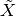 defined by its frontal slices:
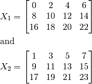
In Python, this array can be expressed as a numpy array:
>>> import numpy as np
>>> X = np.arange(24).reshape((3, 4, 2))
You can view the frontal slices by fixing the last axis:
>>> X[..., 0]
array([[ 0, 2, 4, 6],
[ 8, 10, 12, 14],
[16, 18, 20, 22]])
>>> X[..., 1]
array([[ 1, 3, 5, 7],
[ 9, 11, 13, 15],
[17, 19, 21, 23]])
1.2. Unfolding¶
Also called matrization, unfolding a tensor is done by reading the element in a given way as to obtain a matrix instead of a tensor.
For a tensor of size 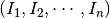, the k-mode unfolding of this tensor will be of size 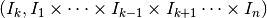.
Important
In tensorly we use an unfolding different from the classical one as defined in [1] for better performance.
Given a tensor 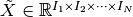, the
mode-n unfolding of is a matrix ![\mathbf{X}_{[n]} \in \mathbb{R}^{I_n, I_M}](_images/math/c8282623371a19f8d007046376ac1a06da22a431.png) ,
with 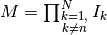 and is defined by
the mapping from element 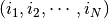 to 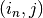, with
,
with 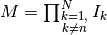 and is defined by
the mapping from element 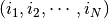 to 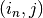, with
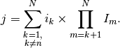
Warning
Traditionally, mode-1 unfolding denotes the unfolding along the first dimension. However, to be consistent with the Python indexing that always starts at zero, in tensorly, unfolding also starts at zero!
Therefore unfold(tensor, 0) will unfold said tensor along its first dimension!
For instance, using the previously defined, the 0-mode unfolding of :
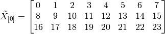
The 1-mode unfolding is given by:
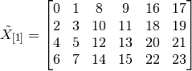
Finally, the 2-mode unfolding is the unfolding along the last axis:
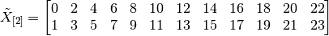
In tensorly:
>>> unfold(X, 0) # mode-1 unfolding
array([[ 0, 1, 2, 3, 4, 5, 6, 7],
[ 8, 9, 10, 11, 12, 13, 14, 15],
[16, 17, 18, 19, 20, 21, 22, 23]])
>>> unfold(X, 1) # mode-2 unfolding
array([[ 0, 1, 8, 9, 16, 17],
[ 2, 3, 10, 11, 18, 19],
[ 4, 5, 12, 13, 20, 21],
[ 6, 7, 14, 15, 22, 23]])
>>> unfold(X, 2) # mode-3 unfolding
array([[ 0, 2, 4, 6, 8, 10, 12, 14, 16, 18, 20, 22],
[ 1, 3, 5, 7, 9, 11, 13, 15, 17, 19, 21, 23]])
1.3. Folding¶
You can fold an unfolded tensor back from matrix to full tensor using the tensorly.base.fold function.
>>> from tensorly import fold
>>> unfolding = unfold(X, 1)
>>> original_shape = X.shape
>>> fold(unfolding, 1, original_shape)
array([[[ 0, 1],
[ 2, 3],
[ 4, 5],
[ 6, 7]],
[[ 8, 9],
[10, 11],
[12, 13],
[14, 15]],
[[16, 17],
[18, 19],
[20, 21],
[22, 23]]])